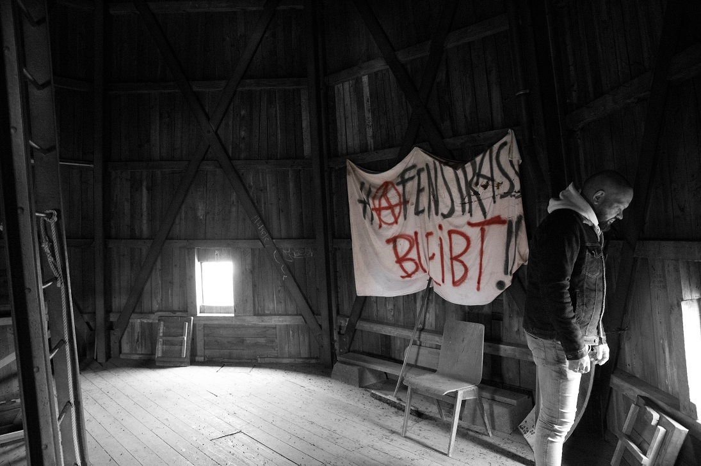
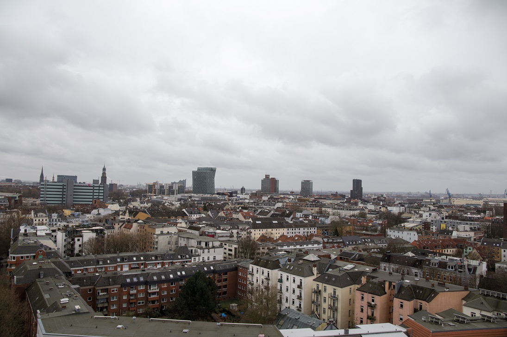
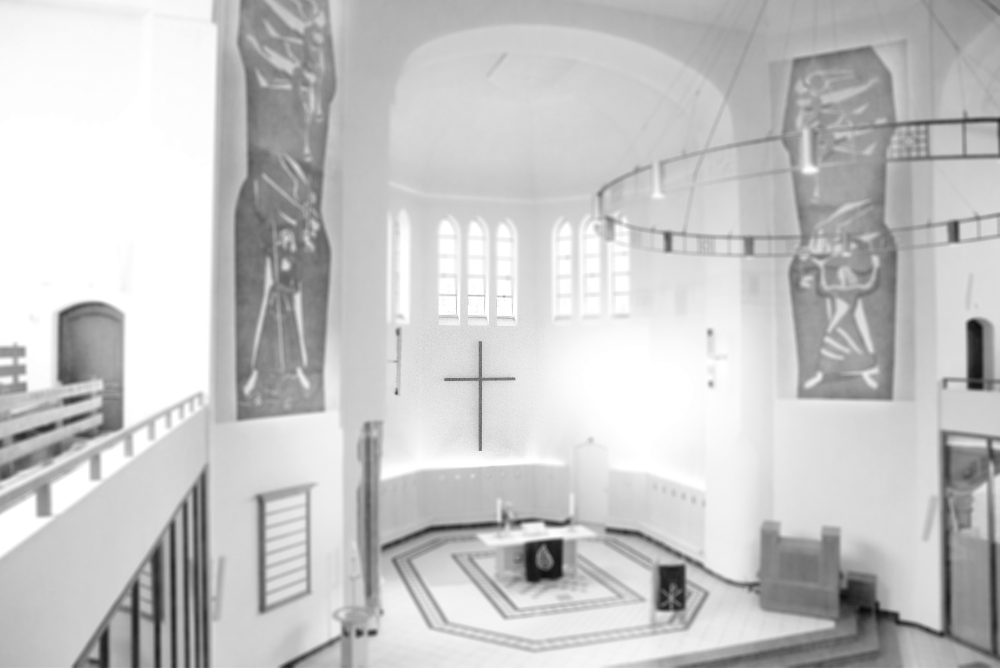
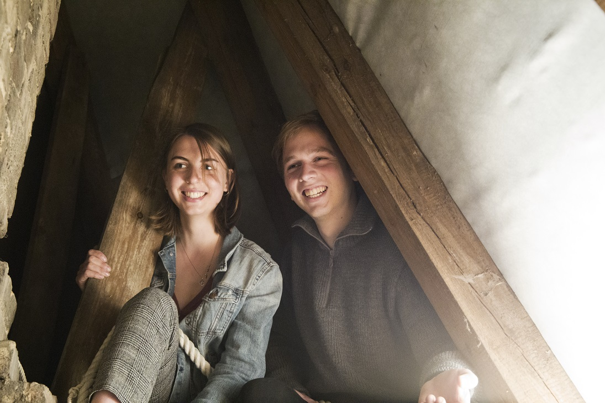

Herz & Haltung
125 Jahre Friedenskirche

Willkommen in der Friedenskirche
125 Jahre, da kommt so manches zusammen. Sie hat viel durchgemacht und einige Stürme überstanden. Zerstörung und Wiederaufbau, und bis heute wacht sie stolz über den Brunnenhof und ihre Nachbarschaft. Sie ist eine Verwandlungskünstlerin, mal ernst, mal bunt, mal schrill, parteiisch, heilig oder klangvoll. So wie sie gerade gebraucht wird. Mit Herz und Haltung eben.


#leave no one behind

